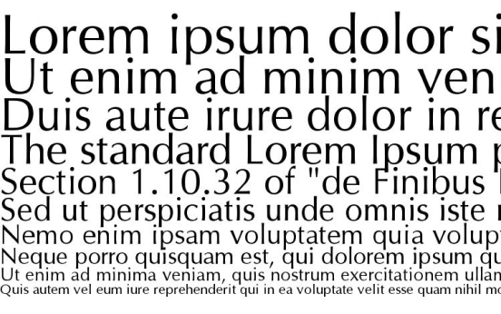

Брусковая антиква
Для акциденции и выделений в начале XIX века в Англии возникли шрифты,
которые относятся к так называемой брусковой антикве. Признаком
шрифтов этого типа является равная толщина всех линий и засечек букв.
Пропорции букв и расположение засечек такие же, как и у шрифта
антиквы.
Брусковые шрифты подразделяются на несколько типов. Первый из них —
итальянский шрифт, который был очень распространен в прошлом столетии.
Это большей частью узкий шрифт, похожий на рустику. Его горизонтальные
штрихи в несколько раз толще вертикальных (так называемый обратный
контраст). Одними из лучших брусковых шрифтов итальянского типа
являются шрифты Beton немецких художников Рудольфа Вольфа и Гейнриха
Иоста, а также изготовленный англичанами шрифт Playbill.
Брусковые шрифты без контраста называются также египетскими и
отличаются равной толщиной засечек. К шрифтам данного типа относятся
такие шрифты, как Memphis и хорошо известный Courier.
Третий подвид брускового шрифта известен как шрифты типа "кларендон".
Первый типографский шрифт стиля "кларендон" разработан в Лондоне в
1843 году как акцидентный и назван "йоник". Он представляет собой
антикву нового стиля с усиленными засечками и соединительными
штрихами. После изобретения машинного набора подобными шрифтами стали
набирать тексты газет, потому что они обеспечивали хорошую читаемость
в мелком кегле на плохой газетной бумаге.
Шрифты типа "кларендон" практически не имеют контраста (хотя он
больше, чем у египетских прифтов), их засечки имеют прямоугольную
форму почти без скруглений в местах соединения с основными штрихами. К
этой категории относятся такие современные шрифты, как SchoolBook и
Xenia.

Антиква-гротеск
Антиква-гротеск — разновидность шрифта, разработанного на основе
антиквы, но имеющего минимальное различие, либо одинаковую толщину
вертикальных и горизонтальных штрихов, как у гротеска, короткие
закругления или небольшие утолщения на концах стоек вместо засечек
антиквы. Эта форма очень древняя, ее образцы встречаются в
древнегреческой и римской эпиграфике (посвящениях, надписях на
художественных памятниках). Новая, упрощенная форма этого типа —
ленточная антиква, отличающаяся от классической полным отсутствием
засечек.
Ленточная антиква — «антиква без засечек». Засечки в таких шрифтах не
похожи на привычные, они почти сходят на нет. Самый известный пример —
шрифт Оптима.
